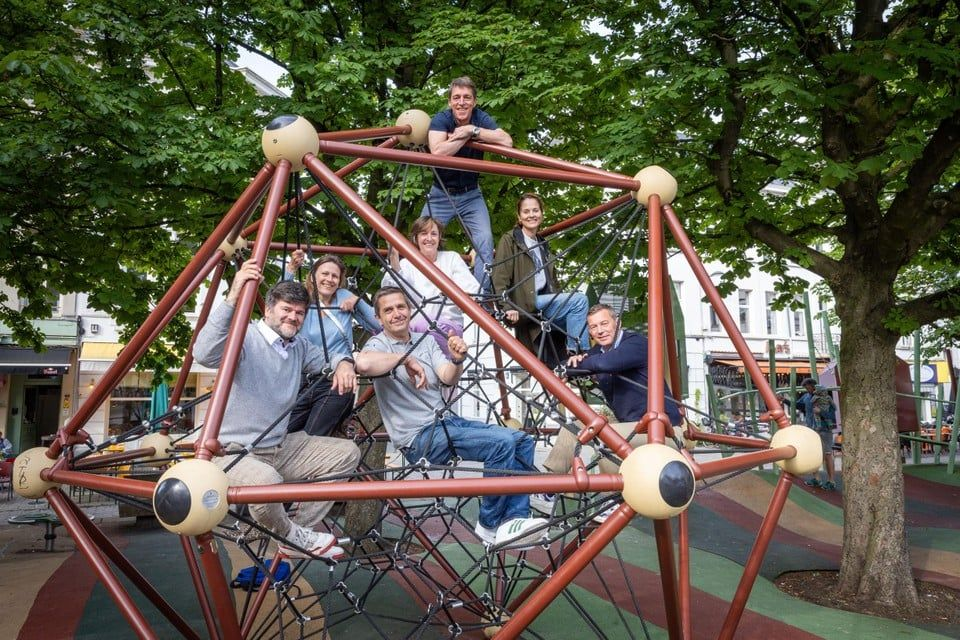
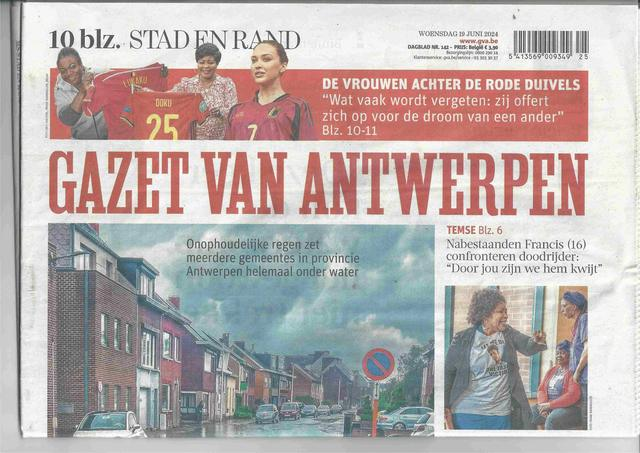
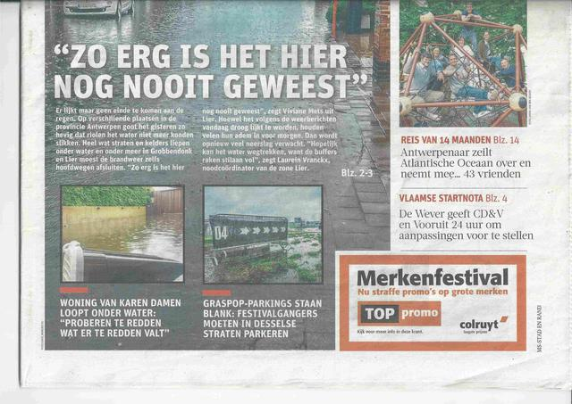
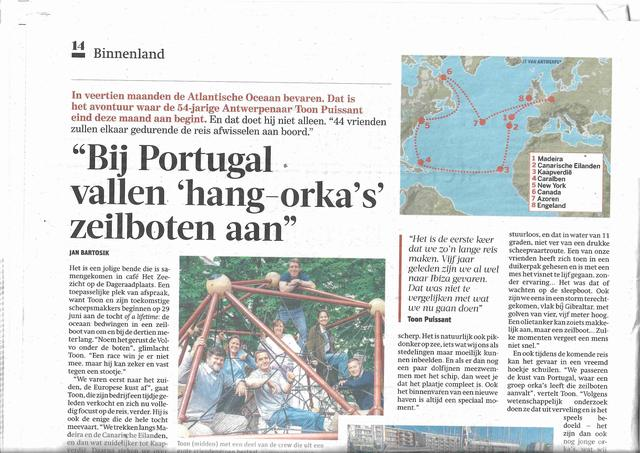
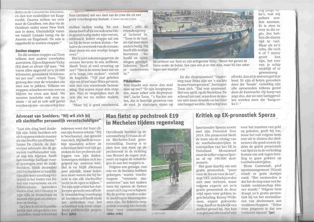

21 juni 2024
In de gazet!
Voor wie niet alles gelooft, maar alleen wat er in de krant staat, bij deze de bevestiging dat we op rondreis gaan 😉. Ons tochtje heeft de voorpagina van de meest toonaangevende krant van het land gehaald! Het kaartje dat de Gazet van Antwerpen zelf getekend heeft klopt niet helemaal, want ze laten ons bijna tot Groenland varen, maar verder een leuk artikel; met dank aan Ann, Vero, Vicky, Mich, Michael en Rik om mee te interviewen en "hangvijftiger" in een klimrek te spelen...
Zie https://www.gva.be/cnt/dmf20240618_94540088
Of wie geen Mediahuis account heeft: gva artikel
Of hieronder:



